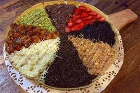
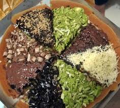

Kuliner Nusantara
Haii guys, pasti udah tahu dan familiar dengan makanan yang satu ini. Khususnya Warga Solo dan sekitarnya. Pasti udah familiar banget dengan martabak manis yang lagi ngehits, apalagi kalo bukan markonar alias amrtabak kota barat.
Setiap petang menjelang, martabak yang berlokasi di J;.Dr.Moewardi Solo (depan Majid Kota Barat) itu selalu ditunggui pembeli. Kalau akhir pekan, antrian panajang mengular jai pemandangan yang biasa. Apalagi yang dinanti kalau bukan jajanan take away Martabak Manis 8 Rasa yang jadi favorite pengunjung. Markobar ini buka mulai pukul 17.00 s/d 23.00 WIB. MARKOBAR tidak hanya ada di Jl.Moewardi Solo, taoi sekarang sudah membuka cabang di kawasan kampus UMS, tepatnya di simpan tiga Pondok Pesantren Assalam, Jl. Dawet Raya Pabean, Kartasura, Suloharjo 
Markobar ini sudah ada sejak tahun 1996, makanya markobar juga sering disebut martabak 1996. Didirikan oleh Pak Budiyono. Dulu, markobar ini hanya menyediakan martabak asin. Tapi akhirnya jadi idola ketika martabak kota barat ini menyediakan martabak manis untuk menu andalanya dengan topping 8 rasa
Markobar menggunakan konsep Open Kithcen, sehingga pengunjung bisa melihat gimana pembuatan markobar. Hmm rata-rata yang suka nongkrong disini sih para mahasiswa atau anak sekolah, tapi banyak jiga loh pejabat yang beli, atau orang-orang dari luar kota yang kebetulan mampir.
Nah, buat temen-temen yang suka kuliner atau belum pernah mencoba Markobar, buruan nich pada mencobanya. Enak dan manis lo... pasti bikin ketagigan...